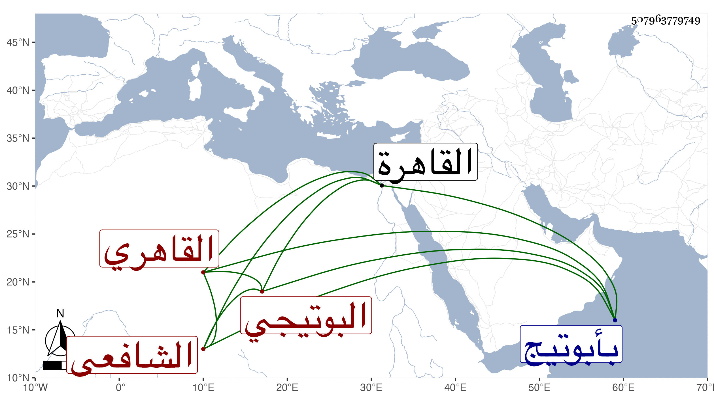

0902Sakhawi.DawLamic.ITO20230111-ara1.EIS1600.507963779749
Biography ID: 507963779749
367
أحمد بن محمد بن عبد الرزاق بن محمد الشهاب البوتيجي القاهري الشافعي ويعرف بين أهل بلده بالميري بفتح الميم ثم تحتانية وآخره راء مهملة . ولد كما بخط أبيه في يوم الأحد منتصف ذي القعدة سنة ست وثمانمائة بأبوتيج ونشأ بها فقرأ القرآن على الشمس المدني بن فرحون وجوده على جماعة منهم الفقيه بركة المقيم بزاوية الشرف بن حريز عم حسام الدين وحفظ التبريزي وغيره وقدم القاهرة في سنة تسع وعشرين فنزل بالفاضلية عند بلديه الزيني البوتيجي وقرأ عليه في الفقه والفرائض وغيرهما ثم التمس منه الشرف المناوي ليقيم عنده فعظم اختصاصه به وملازمته له وقرأ عليه في البهجة تقسيما وكذا قرأ على أحمد الخواص في الفقه وغيره وعلى عمر الحصني في ايساغوجي ، وكان يكتب عن شيخنا في الإملاء بل سمع على الزين الزركشي في مسلم وأجاز له الشهاب البوصيري وأخذ عن الأدكاوي وعمر الطباخ والسيد محمد بن محمد الطباطبي ولم يتميز في شيء من هذا ، وحج هو وزين العابدين ابن شيخه في سنة خمسين وسمعا على أبي الفتح المراغي ثلاثيات الصحيح بقراءة ابن الفالاتي وكذا على التقي بن فهد ، وتنزل في جهات وتردد للأنصاري وقانم التاجر وآخرين ومع مزيد اختصاصه بالمناوي زعم أنه لم يدخل في شهادة فضلا عن القضاء هذا مع أن باسمه شهادة في الكسوة وتزوج زوجة ولده بعد موته ولم يحمد ابناه صنيعه معهما وتناقص حاله جدا . مات في سنة وتسعين عفا الله عنه .
